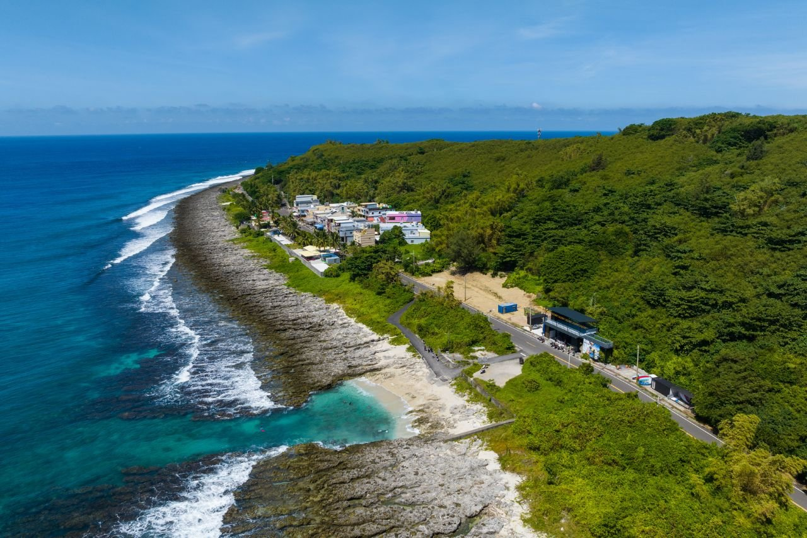
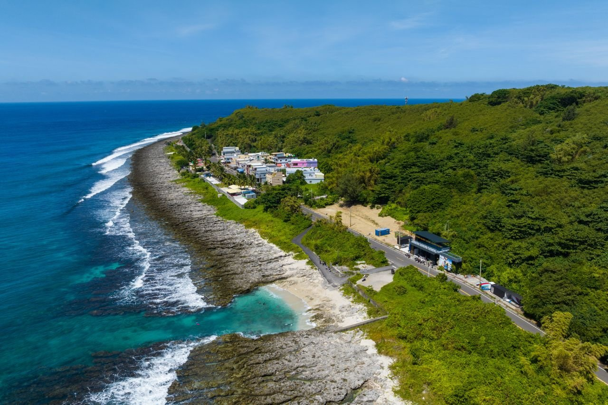
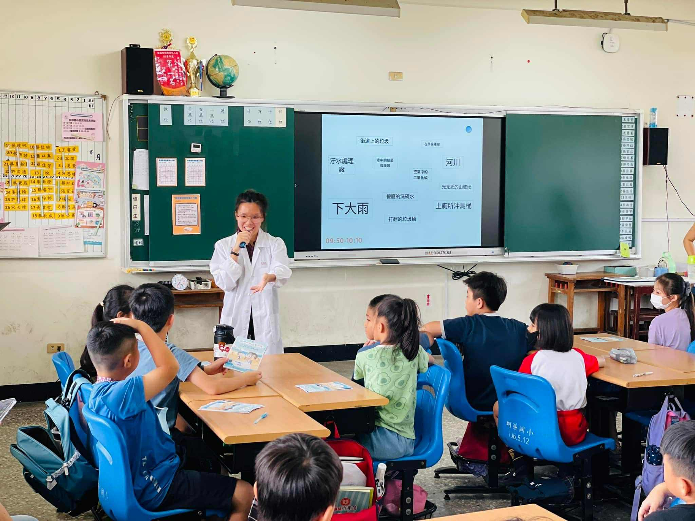
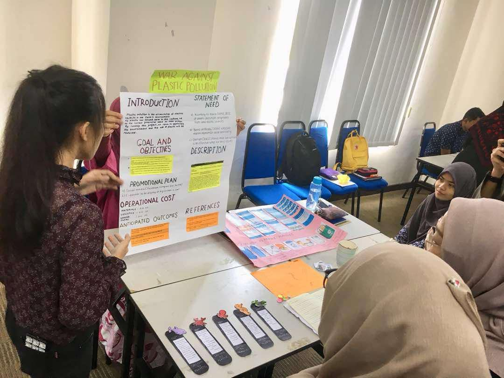

EXPERIENCES
Driving change through groundbreaking research and impactful initiatives.
 

Environmental monitoring projects
Driving sustainable impact through water quality surveys, data analysis, and strategic stakeholder engagement.

Academic projects
Advancing conservation through impactful academic research and data-driven insights.


Public outreach & volunteering activities
Engaging in meaningful community initiatives.